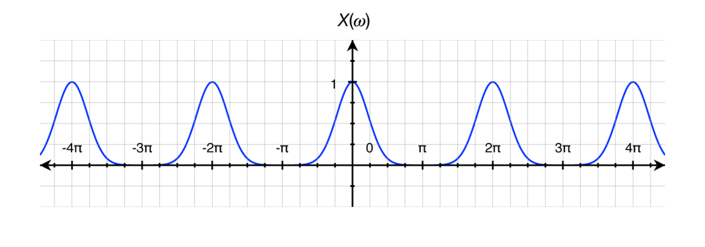
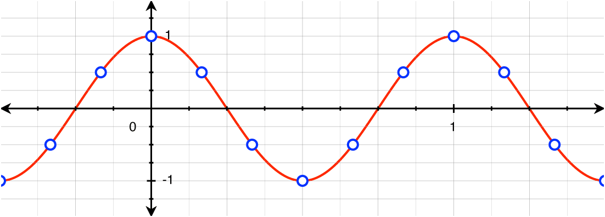
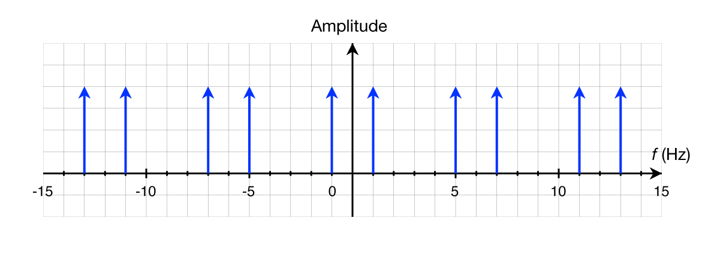
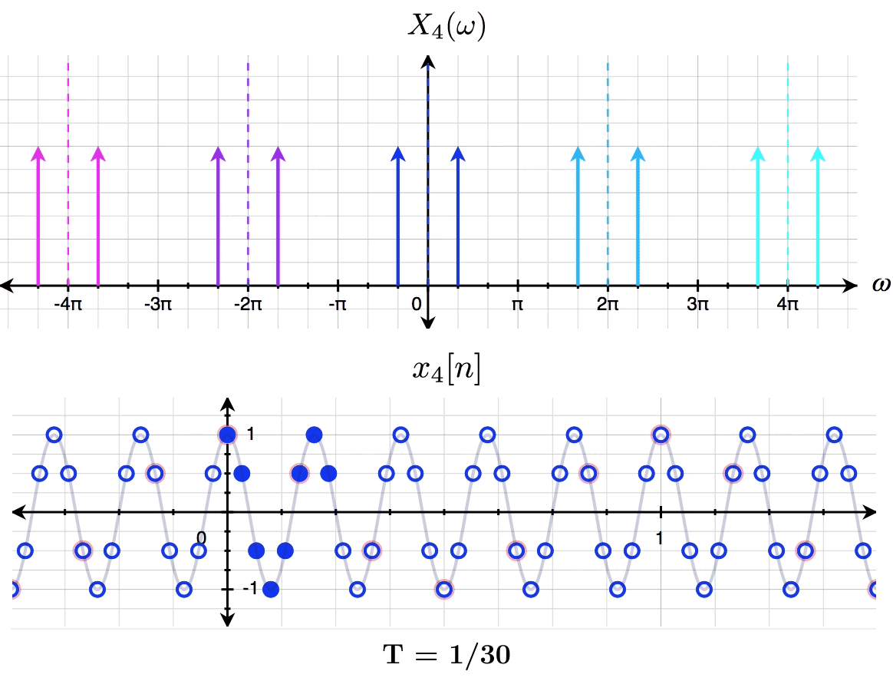

前言
自从实习以后，已经有两年半没有写过博客了。这两年多来主要在学习语音识别，平时做笔记喜欢用印象笔记，缺乏更新博客的动力。最近将 Hexo 的部署迁移到了 Github 的 actions 上，倒是方便了很多。趁着周末，翻译一篇在知乎的回答中引用的文章。
引言
离散时间傅里叶变换 (Discrete Time Fourier Transformer, DTFT) 是数字信号处理 (Digital Signal Processing, DSP) 的基本工具之一。与连续时间傅里叶变换 (Continuous Time Fourier Transform, CTFT) 不同的是，信号的 DTFT 是周期性的，周期是
背景
首先我们简单回顾一下。信号的 DTFT 是应用于非周期离散信号的变换，以便根据信号的各种频谱（频率）分量来表示信号。其定义如下：

对于任意 DTFT，我们可以看到频谱图展示了离散信号的有趣之处：它们总是由无限多个频率组成。
那么，换一种方式问：为什么所有离散信号都由无限多个频率组成？
频域的离散信号
假设有连续信号
很容易看出该信号由单个频率组成（严谨地说应该是两个频率：-1 Hz 和 1Hz，因为
那么，离散信号
如果让我们绘制一个函数来拟合这些离散的点，大部分人会像图 2 一样绘制 1Hz 的余弦。因为这些离散点实际上是连续余弦函数的采样。
然而，再思考一下，实际上有很多余弦都可以拟合这些离散的点：

我们可以看到 1Hz, 5Hz, 7Hz, 11Hz, 和 13Hz (同时 -13Hz, -11Hz, -7Hz, -5Hz, 和 -1Hz) 的余弦都可以拟合这些离散点。所以随着周期的减小，有无限多更高频率的余弦都可以拟合。
采样点数的增加（用更小的周期进行采样）似乎会限制匹配的频率的数量，实际上这些点最终还是离散的，任意两个点之间终究存在一定的“空间”，也就意味着将总是有无限数量的频率分量。
如果我们想把离散信号变换到频域，显然 1Hz 的余弦可以采样得到上述离散信号，5Hz, 7Hz 等等余弦也可以。我们不能说哪一个频率的权重应高于其它频率，它们都是有效的。事实上，这个离散信号由上述所有频率组成。
现在我们理解了为什么 DTFT 会有周期性：有无限多更高的频率分量可以匹配这些离散的数据，因此离散信号的频域包含所有的这些频率。
为了更好地可视化这一点，我们绘制

现在我们可以很清楚地看到离散信号的频域结构。它由 -1Hz 和 1Hz 的脉冲组成，每 6Hz 周期性地产生 5Hz, 7Hz, 11Hz, 13Hz 等分量。频域的最小正周期是
这就是为什么 DTFT 的周期是
采样和感知问题
虽然离散信号
我们可以通过观察 5Hz 的余弦用不同采样周期产生的离散信号

上图展示了采样周期
那么，为什么我们感知离散信号是根据可能的最低频率分量，而不是其中任何一个高频分量呢？当看图 3 的离散点，为什么脑海里第一个想到的是 1Hz 余弦，而不是 3Hz, 5Hz，或 7Hz 的波？或者为什么，当听到一个采样的音频信号时，感觉到的是最低频率而不是更高频率的声音?
这有点有趣，因为从数学上讲，最低的可能频率并不比任何其它频率分量更“正确”。似乎我们的视觉和听觉系统只是朝着简单而优化。毕竟，自然界中很少有东西的振荡速度快到可以让人类视觉系统产生混叠。
然而，在当今世界中，我们很容易找到混叠的例子。如果您曾经观察过一辆经过的汽车上的轮子或飞机上的螺旋桨，您可能会看到它们静止不动、移动得非常缓慢，甚至似乎在向后移动，如图 10 所示。这是因为，即使是人类的视觉系统也会对世界进行某种形式的“采样”，结果出现了时间混叠！
结论
离散信号 DTFT 的周期是
参考文献
[1]. A visual explanation of aliasing and repetition with the DTFT